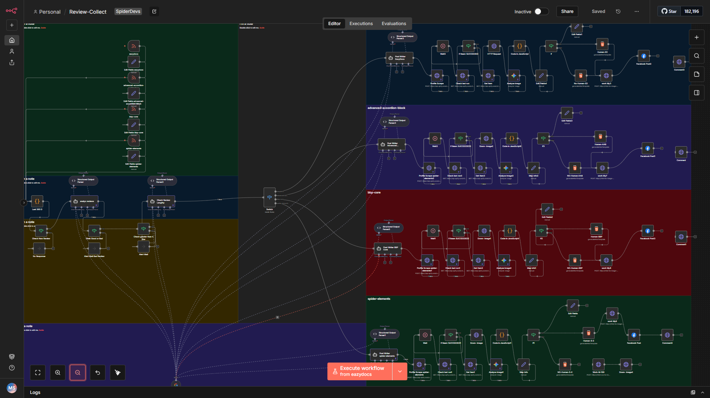
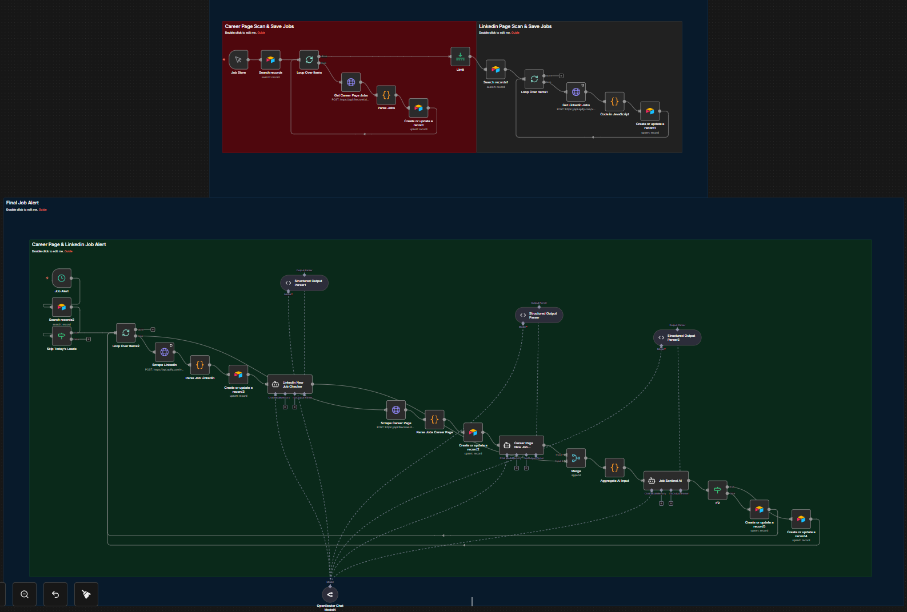

AI Automation Projects
Automation workflows I've built: lead generation, WhatsApp bots, CRM automation, AI agents and more, with screenshots and workflow files.

AutomationAutomated Review Collection & AI-Powered Testimonial Social Posting System
Built a fully automated workflow that collects product reviews from RSS feeds, filters positive high-rating reviews using AI, generates branded testimonial creatives, and publishes them to social media automatically.

AutomationAutomated Job Monitoring & AI-Powered Job Detection System
Built a fully automated system that tracks job openings from company career pages and LinkedIn, detects new roles using AI, and updates a centralized database.
Lead GenAI-Powered Lead Qualification & CRM Automation
Built a fully automated lead pipeline that captures, scores, and routes leads using GPT-4o — cutting response time from hours to under 60 seconds.
 Automation
Automation
WhatsApp Business Automation with n8n
Automated WhatsApp customer support, order confirmations, and follow-up sequences for an e-commerce client — saving 15+ hours per week.
ReportingAutomated Weekly Business Intelligence Report
Built a Monday morning report automation that pulls KPIs from Stripe, Google Analytics, and HubSpot — then uses AI to write an executive summary. Zero human effort required.